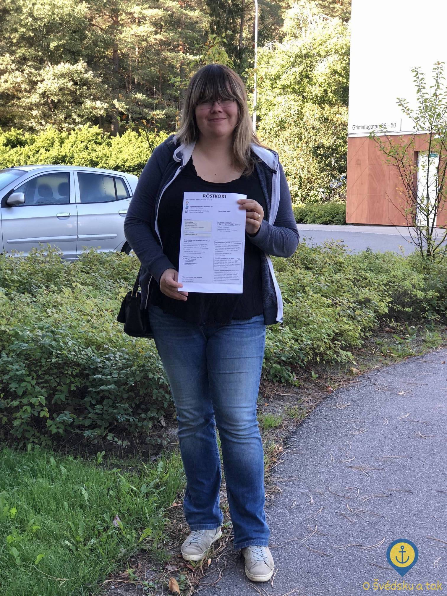
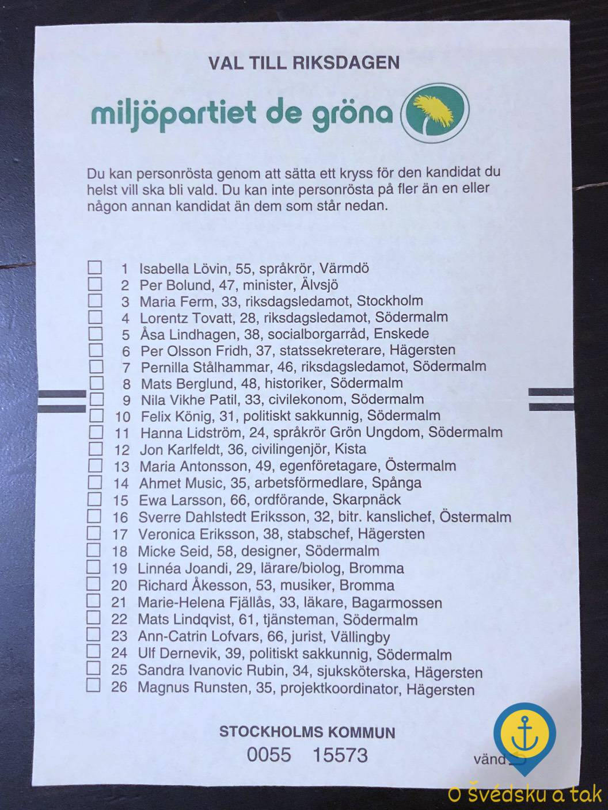
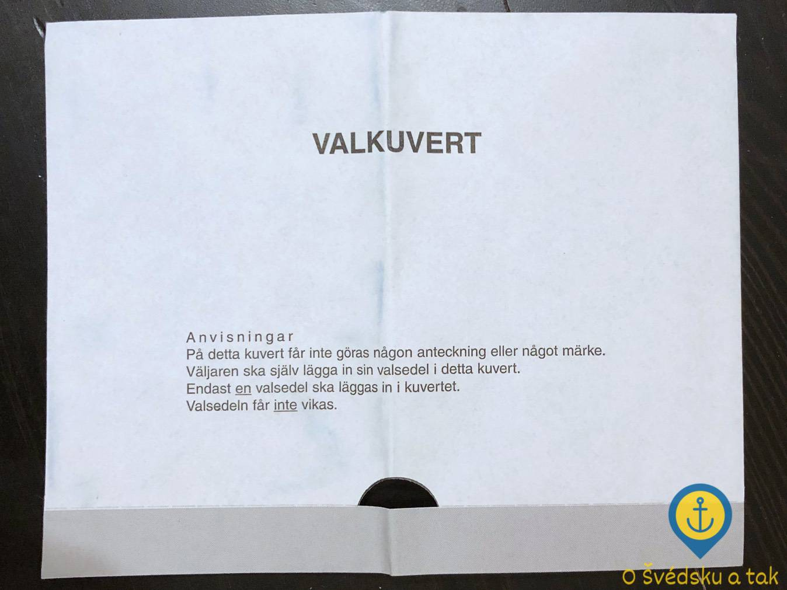

7 zajímavostí o švédských volbách
Publikováno 17. 10. 2018 (20:13) v kategorii Život ve Švédsku • Autor Tereza Holm • Přečtete za 4 minuty
Z nějakého důvodu se švédské volby dostaly do hledáčku českých médií a v den voleb se tak staly tématem číslo jedna nejen pouze ve Švédsku, ale i v ČR. Pokud jste tedy zrovna sledovali televizi nebo otevřeli internetové zprávy, zjistili jste, že ve Švédsku se konají nějaké volby – a to je asi tak všechno, protože vyšší informační hodnotu ony zprávy nepřinesly. Já volby ve Švédsku tenhle rok zažila na vlastní kůži a hodila si svůj hlas do volební urny – no, tedy skoro (později pochopíte proč). Nebudu tu rozebírat švédský volební ani politický systém, spíše bych ráda vypíchla věci, které mě osobně zaujaly a které se od českých voleb liší.
1) Kdo může volit?
Přibližně měsíc před začátkem voleb nám přišly volební karty (švédsky röstkort). Nahoře jsem měla zaškrtnutá dvě políčka ze tří, což znamená, že můžu volit do místního zastupitelstva (švédsky kommun) a kraje (švédsky landsting). Do parlamentu, který se ve švédštině nazývá Riksdag, zatím volit nemůžu – to snad přijde za pár let, až se budu moct prokázat švédským pasem :-). Mimochodem, tato možnost funguje i v ČR – do místního zastupitelstva mohou také volit občané států EU, kteří nemají české občanství, ale mají v ČR trvalý pobyt. Musí se ovšem sami přihlásit, pokud chtějí volit, což se ve Švédsku děje automaticky. Do parlamentu mohou v obou zemích volit pouze občané příslušné země.
 Já se svou volební kartou na cestě k volbám
2) Kdy se bude volit?
Švédi vždy vědí dlouho dopředu, kdy se bude volit – volby se totiž konají každé čtyři roky, a to vždy druhou neděli v září. Jedná se o jediné volby, protože volby do parlamentu, kraje i místního zastupitelstva probíhají současně, aby se nemuselo k urnám moc často a šetřily se náklady. Tento systém je poměrně často kritizován, neboť volby do parlamentu jsou pochopitelně nejsledovanější a nejdůležitější. Mnoho lidí si tak prostě vybere stranu, které pak dá všechny tři hlasy, takže malé místní strany nemají příliš velkou šanci uspět ani na nižších úrovních.
3) Co když zrovna nemůžu?
Možná vás už v předchozím odstavci zaskočilo, že volby se tady konají, na rozdíl od ČR, pouze v jeden jediný den. I v ČR se člověku stane, že nemá čas se k volbám dostavit a musí to řešit buď voličským průkazem (aby mohl volit i někde jinde), nebo k volbám prostě nejít. Ve Švédsku funguje systém předčasného hlasování – zhruba dva týdny předem se otevřou místa na předčasné hlasování (nejčastěji knihovny) a člověk může volit tam. Navíc se to neváže na volební okrsek, takže pokud si s sebou vezmu röstkort a doklad totožnosti, můžu odvolit třeba cestou z práce. No a co když odvolím hned na začátku a pak se stane něco, kvůli čemu změním názor a já se rozhodnu, že bych vlastně chtěla ten hlas hodit někomu jinému? Bez problému, prostě přijdu v den voleb na své volební místo a tam můžu hlas změnit.
 Volbení lístek Strany zelených je určený pro volby do parlamentu, což lze poznat podle jeho žluté barvy
4) Kde vezmu volební lístky?
V ČR na mě pár dní až týdnů před volbami čekala ve schránce obálka s volebními lístky politických stran (nebo taky ne, a v takovém případě jsem si pak sadu volebních lístků vyzvedla přímo ve volební místnosti). Ve Švédsku nic takového nečekejte. Všechny volební lístky jsou k dostání před volební místností – a jednotlivě, žádné sady lístků, takže si vyberu až na místě. Pokud nechci, ať ostatní vidí, koho jsem volila, jednoduše si jich vezmu víc a zbytek vyhodím. Nicméně pokud je mi to jedno, že někdo uvidí mojí vybranou politickou stranu, vezmu si jen lístek, který potřebuju, a neplýtvám papírem. Pokud by byl enormní zájem o nějakou stranu a té lístky na místě došly, ani to není problém – vezmu si prázdný lístek a na ten napíšu jméno strany, kterou chci volit (samozřejmě to musí být strana k volbám přihlášená). Protože ve Švédsku platí stát tisknutí volebních lístků jenom velkým stranám, občas se stane, že některá strana si lístky nenechá vytisknout vůbec a já pak její jméno napsat musím.
5) Co na místě?
Tohle bylo hodně podobné českým volbám – na místě jsme dostali obálky a byli jsme vysláni za plentu, kde jsme mohli udělit preferenční hlas a následně vložit volební lístek do obálky. Na rozdíl od ČR, kde jsou barevně rozděleny obálky, jsou tady rozděleny volební lístky – žluté pro parlament, modré do kraje a bílé do místního zastupitelstva. V každé obálce (švédsky valkuvert) je malý otvor, kterým není vidět, pro koho jste hlasovali, ale barva ukáže, do kterých voleb je hlas v obálce. Myslíte si, že pak podle očekávání hodíte obálku do urny? Nikoliv, ve Švédsku ji totiž odevzdáte volební komisi, která zkontroluje, do kterých voleb můžete volit, a následně si od vás vezme obálky a rovnou je roztřídí.
 Volbení obálka s malým otvorem
6) Jaké potřebuji doklady?
V ČR se může volit na pas nebo občanský průkaz, ve Švédsku navíc ještě na řidičák. No a když si všechny doklady zapomenete? Stačí mít s sebou někoho, kdo s sebou platný doklad má a zároveň se zaručí, že jste to skutečně vy – a potom volit můžete.
7) Co se děje volbách?
Po volbách se na prvním zasedání parlamentu zvolí takzvaný mluvčí parlamentu (švédsky talman), který je po králi druhým nejvýše postaveným mužem Švédska. Ten se sejde se zástupci všech politických stran, které se do parlamentu dostaly, a popovídá si o jejich představách (a s každým si dá fiku – letos prý zvládnul osm šálků kávy a sladké pečivo raději ani nepočítal :-). Následně navrhne premiéra, který sestaví vládu, o které poté parlament hlasuje. Pokud nové vládě nevysloví důvěru, má mluvčí další tři pokusy pro stanovení premiéra, poté by musely být do tří měsíců předčasné volby – což se ovšem v moderním Švédsku zatím nestalo a doufejme, že se to nestane ani tentokrát.